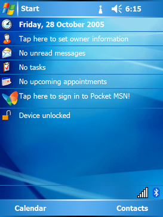

概览
Windows Mobile是微软专为移动产品开发的轻型操作系统。2009年2月，微软发布了Windows Mobile 6.5系统。Windows Mobile捆绑了一系列专为移动设备开发的应用软件，这些应用软件建立在Microsoft Win32 API的基础上。支持运行Windows Mobile的设备包括Pocket PC、智能手机和便携式媒体中心。该操作系统的设计初衷是尽量接近桌面版的Windows。随着后继者Windows Phone操作系统的出现，Windows Mobile系列正式退出了手机系统市场。
Windows Mobile 2003
Windows Mobile 2003，最初代号为"Ozone"，是Windows Mobile家族的移动操作系统成员之一，于2003年6月23日发布。这是第一个被称为"Windows Mobile"的微软移动操作系统，基于Windows CE 4.20。
Windows Mobile 2003 SE
Windows Mobile 2003 SE是Windows Mobile 2003的第二版，发布于2004年3月24日。（可以类比Windows 98 SE）
Windows Mobile 5
Windows Mobile 5.0，最初的代号为"Magneto"，于2005年在拉斯维加斯举行的微软移动和嵌入式开发者大会上发布。微软为Windows Mobile 5提供了到2010年10月12日的主流支持，并延长了到2015年10月13日的扩展支持。Windows Mobile 5的徽标设计类似于Windows XP，系统配色和UI设计也类似与Windows XP，对于触控笔的支援不错。

Windows Mobile 6
Windows Mobile 6，原名"Crossbow"，于2007年2月12日在2007年3GSM世界大会上发布。它有三个不同的版本：“Windows Mobile 6 Standard”（用于没有触屏的智能手机），“Windows Mobile 6 Professional”（用于有触屏的智能手机），以及“Windows Mobile 6 Classic”（用于没有无线电的掌上电脑）。 与当时新推出的Windows Vista操作系统一样，Windows Mobile 6的设计语言是一致的。在功能上，它与Windows Mobile 5非常接近，但稳定性更好，外观更美观。但是这距离苹果公司发布第一代iPhone仅剩最后的几个月。
Windows Mobile 6.1
Windows Mobile 6.1于2008年4月1日发布。这是对Windows Mobile 6的一次小幅升级，但带来了各种性能提升。主屏幕经过重新设计，采用横向布局，支持扩大点击区域，能显示更多信息，这部分更新仅在Windows Mobile的Standard版本中出现。然而，这项功能却奇怪地没有包含在专业版中。此时iPhone已经发布，使用手指来触屏逐渐被大众所接受与喜爱。
Windows Mobile 6.5
Windows Mobile 6.5是对现有Windows Mobile 6.1平台的升级，它在2009年5月发布给制造商，但直到9月后才正式推出。虽然这可以被看作是一个更新，但据说它包括了大量新的增值功能。它还包括了一个新的Internet Explorer Mobile浏览器，被称为"6 On 6"。微软在2009年的MWC上宣布推出这个版本的Windows Mobile，同时，摩托罗拉宣布下半年推出的手机大多都会使用Windows Mobile 6.5。使用这个版本的Windows Mobile的手机会被称为"Windows手机"。 随着Windows Mobile 6.5的发布，微软宣布了几个云计算服务，分别代号为"SkyBox", "SkyLine", "SkyMarket"。"SkyBox"被证实为一个类似于"My Phone"的功能，而"SkyMarket"则被证实是Windows Marketplace的Windows Mobile版本。主屏幕已经被重新设计，使得这个版本更易于手指操作。 据推测，微软将逐渐放弃非触屏式的Windows Mobile手机（即Windows Mobile Standard系列，也就是在更早的版本中被称为智能手机）。微软还计划在这个版本中添加一些来自Zune的软件或功能。
Windows Mobile 6.5还包括一个小版本：Windows Mobile 6.5.3，带来更友好的用户界面，一些新的易于使用的功能，如支持多点触摸，完全触摸控制（即无需手写笔），和拖放开始菜单图标。Internet Explorer Mobile 6也有一些重大更新，包括减少页面载入时间，改进的内存管理和平滑手势。